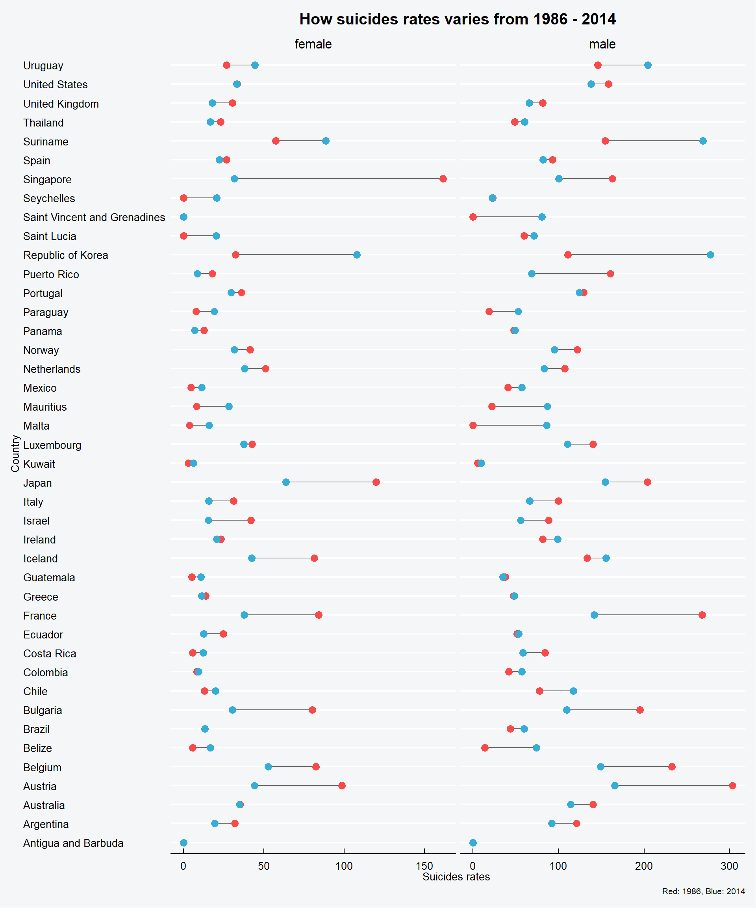

3 How the suicides rates have evolved ?
Now I want to compare for each available country in the dataset how the suicides rates have evolved during a long period of time.
I learn to make the following graph thanks to this beautiful kernel of Janio Martinez Bachmann.
mixed_df <- suicide %>% group_by(country, year, sex) %>%
summarize(nb_occurence = n(), nb_suicide = sum(suicides.100k.pop)) %>% data.frame %>%
spread_(key_col = "year", value_col = "nb_suicide") %>% select(country, sex, "1986", "2014") %>% na.omitcolnames(mixed_df) <- c("country", "sex", "yr_1986", "yr_2014")
comparison_mixed_df <- mixed_df %>%
mutate(difference = yr_2014 - yr_1986,
pct = difference/yr_1986*100,
variation = ifelse(difference >0, "Positive", "Negative"))head(comparison_mixed_df) %>% kable () %>%
kable_styling(bootstrap_options = "striped", full_width = F)| country | sex | yr_1986 | yr_2014 | difference | pct | variation |
|---|---|---|---|---|---|---|
| Antigua and Barbuda | female | 0.00 | 0.00 | 0.00 | NaN | Negative |
| Antigua and Barbuda | male | 0.00 | 0.00 | 0.00 | NaN | Negative |
| Argentina | female | 32.01 | 19.48 | -12.53 | -39.144017 | Negative |
| Argentina | male | 120.89 | 91.87 | -29.02 | -24.005294 | Negative |
| Australia | female | 35.38 | 34.88 | -0.50 | -1.413228 | Negative |
| Australia | male | 140.41 | 114.19 | -26.22 | -18.673884 | Negative |
Let’s now use ggplot to plot it.

Let me give you a simple trick to read this plot : if the red dot is located at the right then the suicide rate dropped of the distance between the red dot and blue dot. You interpret it the same for the blue. The blue dot is the suicides rate in 2014, the red the suicides rate in 1986.
We see on this graphic that th suicides rates of men are twice higher than the women’s (as shown in the x axis).
The women suicides rates in Singapour was really high in 1986 but it drops significantly in 28 years. In Korea we see the inverse (sadly).